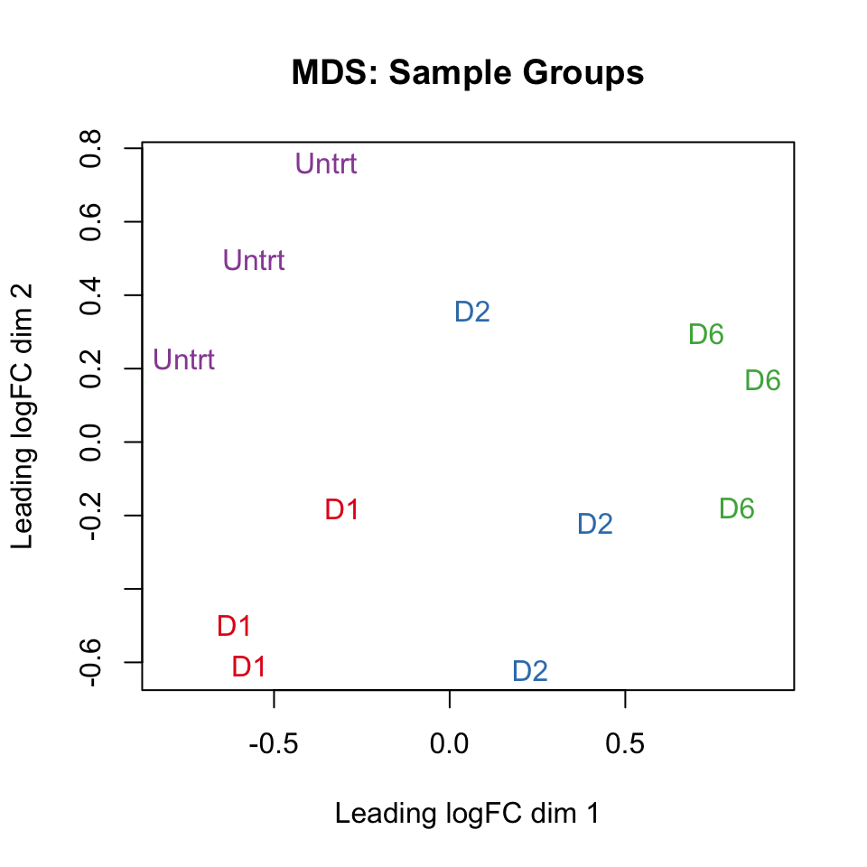
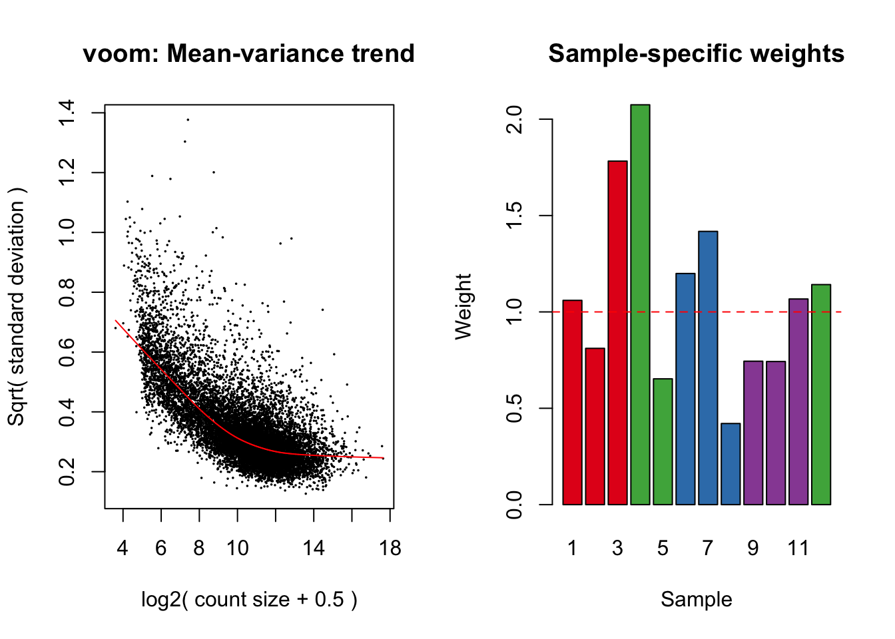
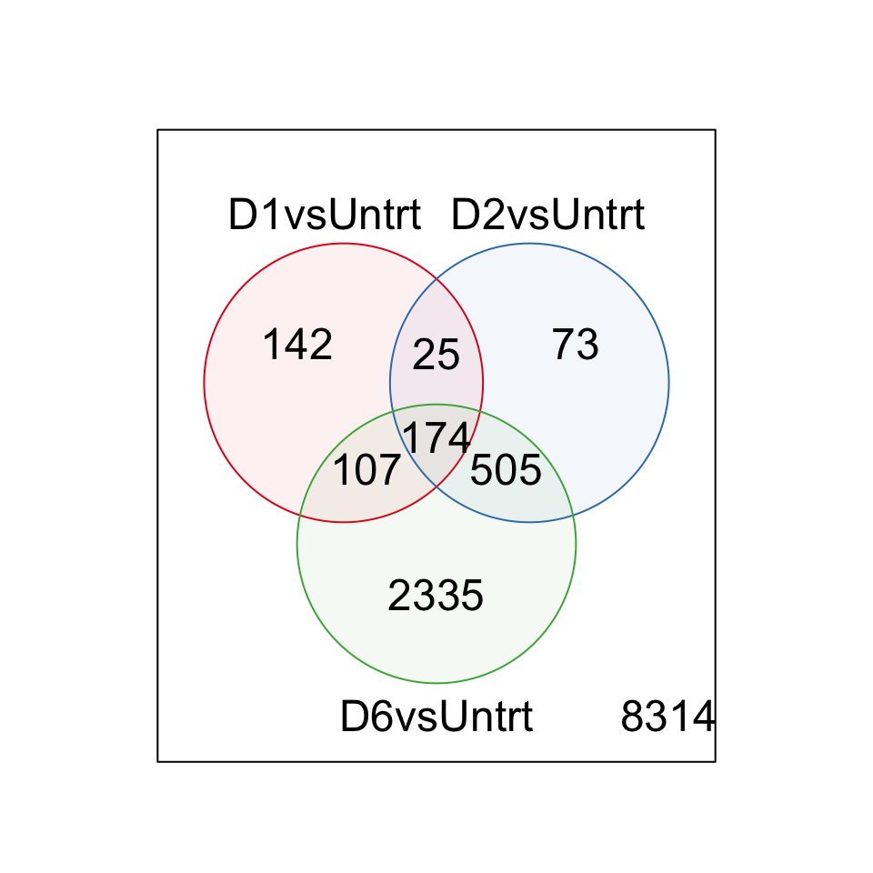
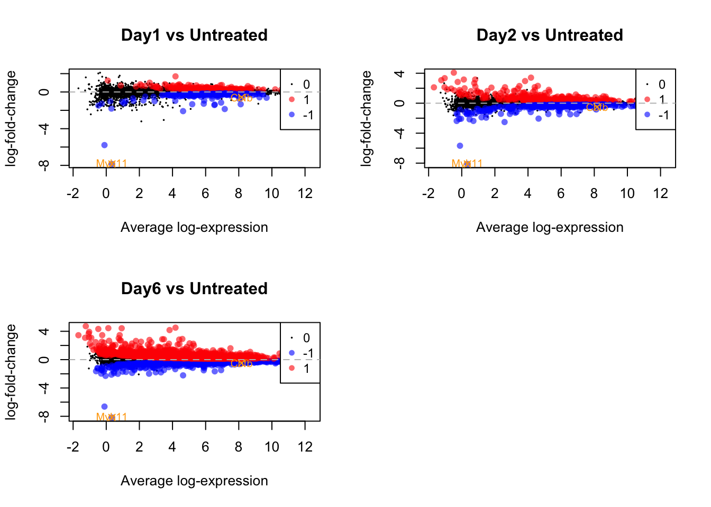

This experiment is an oncogene withdrawal study where leukaemias are driven by tet transactivator expression of the CBFb-MYH11 fusion (known as inv(16), which is withdrawn upon Dox treatment. In this experiment, we have 3 untreated samples vs 3 samples at both day1, day2 and day6. We got the basic analysis below:
setwd("/stornext/General/data/user_managed/grpu_mritchie_1/YiXie/reference/mm/")
library(Rsubread)
library(Mus.musculus)
#build index
buildindex('Mus_musculus.GRCm38', reference = "Mus_musculus.GRCm38.dna.primary_assembly.fa",
memory = 12000)
#alignment
fastq.files <- list.files("/stornext/General/data/user_managed/grpu_mritchie_1/MarkMcKenzie/cbf-myh11", pattern = "fastq.gz$", full.names=T)
bam <- gsub("fastq.gz", "subread.bam",fastq.files)
align(index = "Mus_musculus.GRCm38", readfile1 = fastq.files,input_format="FASTQ", output_format="BAM",
output_file=bam, nthreads=8)
#counting&annotation
bam.files <- list.files(path = "./bamfiles", pattern = ".bam$", full.names = TRUE)
counts <- featureCounts(bam.files, annot.inbuilt = "mm10")
names(counts) #see slots in counts
dim(counts$counts) #see the number of genes
geneid <- rownames(counts$counts)
genes <- select(Mus.musculus, keys = geneid, columns = c("SYMBOL", "TXCHROM","TXSTART","TXEND","GENENAME"), keytype = "ENTREZID")
genes <- genes[!duplicated(genes$ENTREZID),]
save(counts,genes,file="counts.rda")library(edgeR)
library(limma)
library(Glimma)
load("counts.rda")
#preprocessing
rpkmvalues <- rpkm(counts$counts, gene.length = counts$annotation$Length)
colnames(rpkmvalues) <- gsub("X.stornext.General.data.user_managed.grpu_mritchie_1.YiXie.reference.mm.bamfiles.","",colnames(rpkmvalues))
colnames(rpkmvalues) <- gsub("_S._R1.subread.bam","",colnames(rpkmvalues))
colnames(rpkmvalues) <- samplenames <- gsub("_S.._R1.subread.bam","",colnames(rpkmvalues))
genes <- cbind(genes, "Length"=counts$annotation$Length, rpkmvalues)
x <- DGEList(counts = counts$counts, genes=genes)
group <- as.factor(c("D1","D1","D1","D6","D6","D2","D2","D2","Untrt","Untrt","Untrt","D6"))
x$samples$group <- group
rownames(x$samples) <- gsub("X.stornext.General.data.user_managed.grpu_mritchie_1.YiXie.reference.mm.","",rownames(x$samples))
x$samples## group lib.size norm.factors
## bamfiles.1072_S4_R1.subread.bam D1 47364803 1
## bamfiles.1073_S5_R1.subread.bam D1 39900483 1
## bamfiles.1074_S6_R1.subread.bam D1 35506171 1
## bamfiles.1078_S10_R1.subread.bam D6 30892187 1
## bamfiles.1080_S12_R1.subread.bam D6 36078384 1
## bamfiles.1081_S7_R1.subread.bam D2 33655059 1
## bamfiles.1082_S8_R1.subread.bam D2 49232518 1
## bamfiles.1083_S9_R1.subread.bam D2 57307065 1
## bamfiles.1084_S3_R1.subread.bam Untrt 38683405 1
## bamfiles.1086_S2_R1.subread.bam Untrt 43150122 1
## bamfiles.1087_S1_R1.subread.bam Untrt 34679913 1
## bamfiles.1979_S11_R1.subread.bam D6 30775956 1##filter lowly expressed
keep.exprs <- rowSums(cpm(x)>1) >=3 #row=genes col=samples; genes express in at least 3 samples
x <- x[keep.exprs,,keep.lib.sizes=F]
dim(counts$counts)## [1] 27179 12dim(x)## [1] 11675 12##normalising
x <- calcNormFactors(x, method = "TMM")
x$samples$norm.factors## [1] 1.0011728 0.9881613 0.9909185 1.0126485 1.0045901 0.9997815 0.9984825
## [8] 1.0057558 0.9848156 0.9975939 0.9952433 1.0214132library(RColorBrewer)
par(mfrow=c(1,1))
col.group <- group
levels(col.group) <- brewer.pal(nlevels(col.group),"Set1") #change groupID to colorID
col.group <- as.character(col.group)
lcpm <- cpm(x, log=T)
plotMDS(lcpm, labels=group, main="MDS: Sample Groups", col=col.group)
#glMDSPlot(lcpm, labels=samplenames, groups = group, launch = T)design <- model.matrix(~0+group)
colnames(design) <- gsub("group", "", colnames(design))
contr.matrix <- makeContrasts(
D1vsUntrt = D1-Untrt,
D2vsUntrt = D2-Untrt,
D6vsUntrt = D6-Untrt,
levels = colnames(design)
)
v <- voomWithQualityWeights(x, design, col = col.group, plot=T)
fit <- lmFit(v)
fit <- contrasts.fit(fit, contrasts = contr.matrix)
efit <- eBayes(fit)
dt <- decideTests(efit, p.value = 0.05)
summary(dt) #number of DE genes## D1vsUntrt D2vsUntrt D6vsUntrt
## Down 211 345 1572
## NotSig 11227 10898 8554
## Up 237 432 1549##common genes
de.common <- which(dt[,2]!=0 & dt[,3]!=0)
length(de.common)## [1] 679head(efit$genes$SYMBOL[de.common], n=20)## [1] "Mrpl15" "Lypla1" "Ncoa2" "Mcm3" "Smap1" "Arhgef4" "Neurl3"
## [8] "Cox5b" "Aff3" "Rnf149" "Il1rl1" "Ormdl1" "Coq10b" "Ndufb3"
## [15] "Als2" "Rpe" "Rufy4" "Chpf" "Sp110" "Ube2f"vennDiagram(dt[,1:3],circle.col = brewer.pal(3,"Set1"))
write.fit(efit,dt, file = "results.txt")Link to results for three comparisons
D1.vs.Untrt <- topTable(efit, coef=1,n=Inf)
D2.vs.Untrt <- topTable(efit, coef=2,n=Inf)
D6.vs.Untrt <- topTable(efit, coef=3,n=Inf)
head(D1.vs.Untrt[,c(1,3,4,20,21,22,23,24)])## ENTREZID SYMBOL TXCHROM logFC AveExpr t P.Value
## 56508 56508 Rapgef4 chr2 -2.0873337 4.638095 -28.32372 8.375169e-13
## 14866 14866 Gstm5 chr3 -1.3747527 6.550460 -16.50372 6.425772e-10
## 71279 71279 Slc29a3 chr10 -0.9342152 5.911305 -13.50696 7.098753e-09
## 12400 12400 Cbfb chr8 -0.5804319 8.166644 -11.83651 3.352621e-08
## 66124 66124 Josd2 chr7 -1.1568932 6.934212 -11.11436 6.954805e-08
## 74277 74277 Chic2 chr5 -0.7300277 6.394060 -10.81890 9.481896e-08
## adj.P.Val
## 56508 9.778010e-09
## 14866 1.875522e-06
## 71279 1.657559e-05
## 12400 6.523641e-05
## 66124 1.159962e-04
## 74277 1.383764e-04head(D2.vs.Untrt[,c(1,3,4,20,21,22,23,24)])## ENTREZID SYMBOL TXCHROM logFC AveExpr t P.Value
## 56508 56508 Rapgef4 chr2 -2.0576175 4.638095 -27.13062 1.430064e-12
## 53313 53313 Atp2a3 chr11 0.8730780 8.688141 17.73569 2.682222e-10
## 14866 14866 Gstm5 chr3 -1.4826494 6.550460 -17.04082 4.359080e-10
## 71279 71279 Slc29a3 chr10 -1.0719108 5.911305 -14.80930 2.368847e-09
## 66124 66124 Josd2 chr7 -1.4458910 6.934212 -13.20350 9.291183e-09
## 74277 74277 Chic2 chr5 -0.8294331 6.394060 -11.79216 3.502425e-08
## adj.P.Val
## 56508 1.669599e-08
## 53313 1.017845e-06
## 14866 1.017845e-06
## 71279 4.609382e-06
## 66124 1.549637e-05
## 74277 5.111351e-05head(D6.vs.Untrt[,c(1,3,4,20,21,22,23,24)])## ENTREZID SYMBOL TXCHROM logFC AveExpr t P.Value
## 56508 56508 Rapgef4 chr2 -2.219838 4.638095 -28.53749 7.627214e-13
## 53313 53313 Atp2a3 chr11 1.095229 8.688141 23.34446 9.209207e-12
## 14866 14866 Gstm5 chr3 -1.650777 6.550460 -19.35708 9.221930e-11
## 27027 27027 Tspan32 chr7 1.800441 4.872252 17.85462 2.472677e-10
## 74772 74772 Atp13a2 chr4 1.087912 7.105460 17.32844 3.557542e-10
## 71279 71279 Slc29a3 chr10 -1.217692 5.911305 -17.03795 4.368019e-10
## adj.P.Val
## 56508 8.904772e-09
## 53313 5.375875e-08
## 14866 2.691651e-07
## 27027 4.811417e-07
## 74772 5.933472e-07
## 71279 6.374578e-07write.table(D1.vs.Untrt, file = "D1_vs_Untrt_RankedResults.txt",sep = "\t",row.names = F)
write.table(D2.vs.Untrt, file = "D2_vs_Untrt_RankedResults.txt",sep = "\t",row.names = F)
write.table(D6.vs.Untrt, file = "D6_vs_Untrt_RankedResults.txt",sep = "\t",row.names = F)Link to Top Table for Day1 vs Untrt
Link to Top Table for Day2 vs Untrt
Link to Top Table for Day6 vs Untrt
library(scales)
selgenes = c("Cbfb", "Myh11")
geneind = match(selgenes, fit$genes$SYMBOL)
par(mfrow=c(2,2))
plotMD(efit, coef=1, status=dt[,1], hl.col=alpha(c("red", "blue"),0.6), main="Day1 vs Untreated")
points(efit$Amean[geneind], efit$coef[geneind,1], pch=4, col="orange")
text(efit$Amean[geneind], efit$coef[geneind,1], labels=selgenes, cex=0.75, col="orange")
abline(h=0, col="grey", lty=2)
plotMD(efit, coef=2, status=dt[,2], hl.col=alpha(c("red", "blue"),0.6), main="Day2 vs Untreated")
points(efit$Amean[geneind], efit$coef[geneind,2], pch=4, col="orange")
text(efit$Amean[geneind], efit$coef[geneind,2], labels=selgenes, cex=0.75, col="orange")
abline(h=0, col="grey", lty=2)
plotMD(efit, coef=3, status=dt[,3], hl.col=alpha(c("blue", "red"),0.6), main="Day6 vs Untreated")
points(efit$Amean[geneind], efit$coef[geneind,3], pch=4, col="orange")
text(efit$Amean[geneind], efit$coef[geneind,3], labels=selgenes, cex=0.75, col="orange")
abline(h=0, col="grey", lty=2)
Link to Interactive MDPlot for Day1 vs Untrt
Link to Interactive MDPlot for Day2 vs Untrt
Link to Interactive MDPlot for Day6 vs Untrt
glMDPlot(efit, coef=1, status = dt[,1], main = colnames(efit)[1], counts = x$counts,samples=colnames(x), anno = x$genes, groups = group, side.main ="ENTREZID", display.columns = c("SYMBOL","ENTREZID"), search.by="SYMBOL", launch = F)
glMDPlot(efit, coef=2, status = dt[,2], main = colnames(efit)[2], counts = x$counts,samples=colnames(x), anno = x$genes, groups = group, side.main ="ENTREZID", display.columns = c("SYMBOL","ENTREZID"), search.by="SYMBOL", launch = F)
glMDPlot(efit, coef=3, status = dt[,3], main = colnames(efit)[3], counts = x$counts,samples=colnames(x), anno = x$genes, groups = group, side.main ="ENTREZID", display.columns = c("SYMBOL","ENTREZID"), search.by="SYMBOL", launch = F)